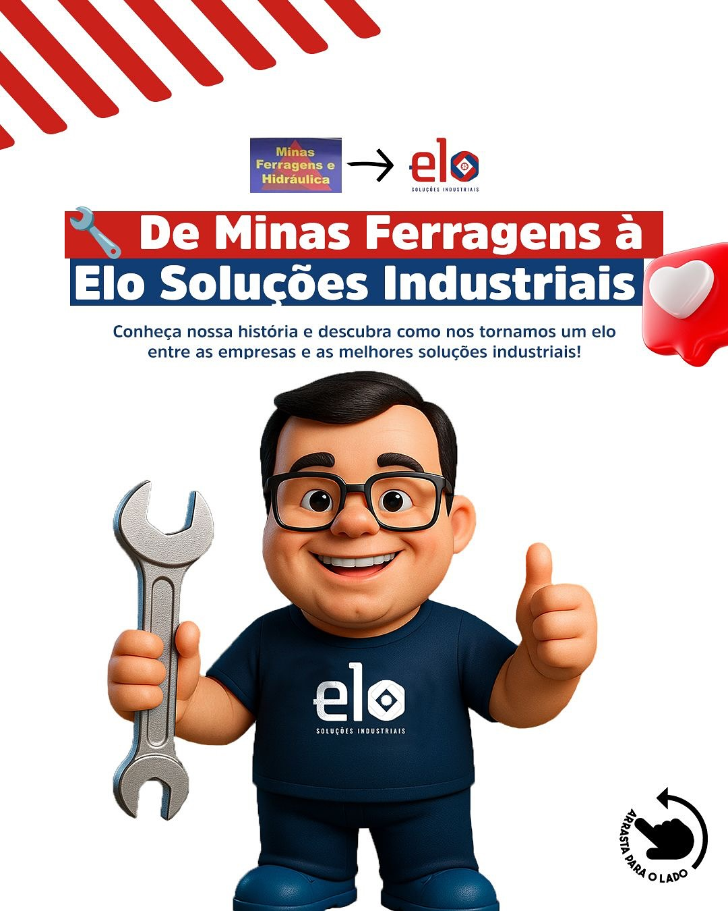
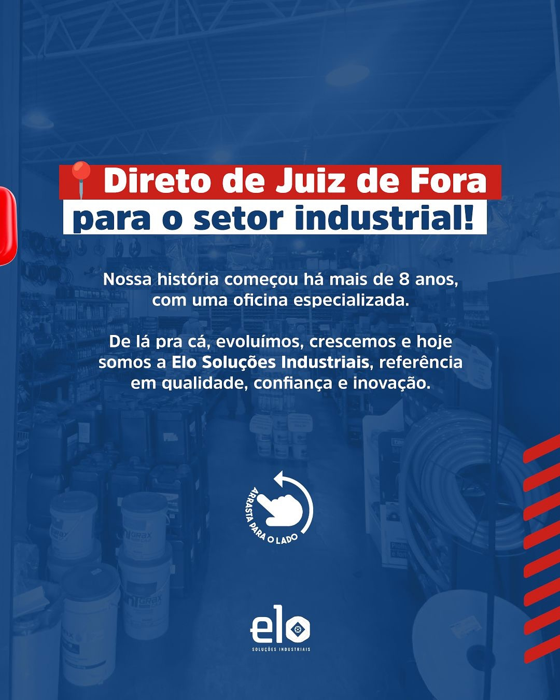

Ferramentas e ferragens
Ferramentas manuais, elétricas, fixadores, parafusos e materiais para uso profissional.
Da tradição da Minas Ferragens à nova fase em soluções industriais. Há mais de 8 anos conectando empresas, profissionais e equipes de manutenção às ferramentas, materiais e soluções certas para o setor industrial.


A ELO Soluções Industriais nasceu da evolução da antiga Minas Ferragens e Hidráulica. A mudança consolida uma atuação mais ampla, com foco em soluções industriais, manutenção, ferramentas, ferragens, conexões e atendimento a empresas de Juiz de Fora - MG.
O nome ELO reforça o papel da empresa: conectar a necessidade do cliente à solução técnica correta, com agilidade de balcão, orçamento rápido e proximidade local.
O site apresenta categorias e aplicações. Para disponibilidade, medidas e condições comerciais, o atendimento acontece por WhatsApp, telefone ou balcão.
Ferramentas manuais, elétricas, fixadores, parafusos e materiais para uso profissional.
Itens de proteção para equipes técnicas, obra, manutenção e rotina industrial.
Graxa, óleo lubrificante, rolamentos, vedações e itens para manutenção mecânica.
Montagem e fabricação própria sob demanda para máquinas, veículos e sistemas hidráulicos.
Ferramentas, conexões, mangueiras, lubrificantes e itens de reposição para rotina técnica.
Abrasivos, eletrodos, ferramentas, fixadores e materiais para produção e reparo.
Materiais técnicos, ferragens, EPIs, elétrica, hidráulica e apoio para compras recorrentes.
A proposta da ELO não é apenas expor produtos. É ajudar empresas e profissionais a encontrar alternativas adequadas para manutenção, reposição, obra e operação.
Contato direto por WhatsApp para cotações, medidas, disponibilidade e orientação comercial.
Ferramentas, EPIs, lubrificantes, rolamentos, conexões, abrasivos, eletrodos, tecalon e ferragens.
Mais de 8 anos de atuação desde a fase Minas Ferragens, agora com marca focada em soluções industriais.
Fale com a ELO Soluções Industriais em Juiz de Fora - MG e envie sua demanda pelo WhatsApp.
Não. O site é institucional. A compra e o orçamento são feitos por WhatsApp, telefone ou atendimento direto.
Não. A empresa atende indústrias, empresas, oficinas, profissionais técnicos, construção civil e demandas de manutenção.
Sim. Os materiais institucionais indicam fabricação e montagem própria de mangueiras hidráulicas sob demanda.